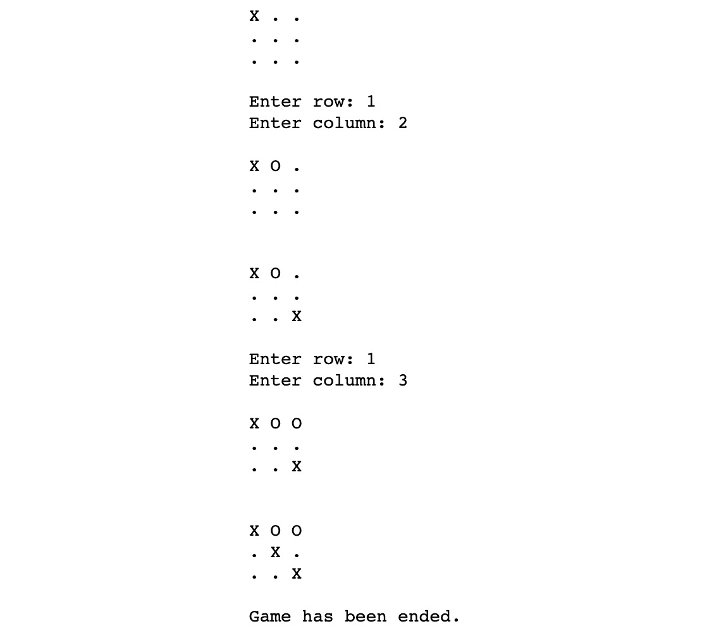

概观
在这一章中，你将被介绍到人工智能(AI)的基础，这是AI各个领域的基础。通过使用Python编程语言的简单编码练习，您还会遇到不同的算法，包括MinMax和A*。你还将通过一个简单的井字游戏来实现你的第一个人工智能，在这个游戏中，你将教程序如何战胜一个人类玩家。到本章结束时，你将学会如何使用流行的Python库来开发智能AI驱动的程序。
简介
在讨论不同的人工智能技术和算法之前，我们将看看人工智能和机器学习的基础知识，并浏览一些基本定义。将使用真实世界的例子，以易于消化的方式呈现AI的基本概念。
人工智能试图使用硬件和软件解决方案来复制人类智能。它基于逆向工程。例如，人工神经网络是模仿人脑的工作方式而建立的。除了神经网络，神经科学中还有许多其他模型可以用来利用人工智能解决现实世界的问题。已知在各自领域使用人工智能的公司包括谷歌，谷歌翻译，苹果，Face ID，亚马逊，Alexa产品，甚至优步和特斯拉，他们仍在致力于制造自动驾驶汽车。
另一方面，机器学习是一个经常与人工智能混淆的术语。它起源于20世纪50年代，由阿瑟·李·塞缪尔于1959年首次定义。
在他名为机器学习的书中，Tom Mitchell对它提出了一个简单的定义:“机器学习领域关注的是如何构建随着经验自动改进的计算机程序的问题。
我们可以将此理解为机器学习是这样一个领域，其目标是构建一个能够从数据中学习模式的计算机程序，并利用更多数据提高其学习能力。
他还提出了一个更正式的定义，即计算机程序被称为从经验中学习， E ，关于一个任务， T ，和一个性能度量， P ，如果它在 T 上的性能，由 P 度量，随着经验而提高， E 。这可以解释为计算机程序学习所需要的东西。我们可以将 E (经验)视为需要提供给机器的数据， T 视为机器需要执行的决策类型，而 P 则是对其性能的衡量。
从这两个定义可以得出结论，机器学习是实现AI的一种方式。但是，没有机器学习也可以有AI。例如，如果你硬编码规则和决策树，或者你应用搜索技术，你可以创建一个人工智能代理，即使你的方法与机器学习没有什么关系。
随着每秒钟越来越多的数据被创建，人工智能和机器学习已经帮助科学界利用大数据的爆炸。借助人工智能和机器学习，科学家可以在这些庞大的数据集上提取人眼无法足够快速处理的信息。
既然已经介绍了AI和机器学习，那我们就把重点放在AI上。
AI如何解决问题？
人工智能根据人脑处理信息的方式实现了人类智能的自动化。
每当我们解决一个问题或与人互动时，我们都会经历一个过程。通过这样做，我们限制了问题或交互的范围。这个过程通常可以在人工智能中建模和自动化。
人工智能使计算机看起来像人类一样思考。
有时候，感觉人工智能知道我们需要什么。想想你在网上购物后收到的个性化优惠券。人工智能知道我们最有可能购买哪种产品。机器能够通过实现不同的技术和模型来学习你的偏好，这一点我们将在本书的后面讨论。
人工智能是由执行低级指令的计算机来完成的。
即使一个解决方案可能看起来很智能，我们还是要编写代码，就像人工智能中的任何其他软件解决方案一样。即使我们在模拟神经元，简单的机器代码和计算机硬件执行思维过程。
大多数人工智能应用都有一个主要目标。当我们与人工智能应用程序交互时，它看起来像人类，因为它可以将问题域限制在主要目标上。因此，人工智能实现目标的过程可以分解成更小更简单的低级指令。
人工智能可以刺激人类的感官和专业领域的思维过程。
你必须能够模拟人类的感官和思想，有时欺骗AI相信我们正在与另一个人类互动。在某些特殊情况下，我们甚至可以增强自己的感官。
类似地，例如，当我们与聊天机器人互动时，我们希望机器人能理解我们。我们希望聊天机器人甚至语音识别系统能够提供符合我们期望的人机界面。为了满足这些期望，计算机需要模拟人类的思维过程。
人工智能学科的多样性
一辆无法感知同一条高速公路上行驶的其他汽车的自动驾驶汽车将非常危险。AI智能体需要处理和感知周围的事物，以便驾驶汽车。然而，这还不够，因为如果不了解移动物体的物理特性，在正常环境下驾驶汽车几乎是不可能的，更不用说是致命的任务了。
为了创建一个可用的人工智能解决方案，涉及到不同的学科，例如:
- 机器人:在太空中移动物体
- 算法理论:构造高效算法
- 统计:得出有用的结果，预测未来，分析过去
- 心理学:模拟人类大脑如何工作
- 软件工程:创建经得起时间考验的可维护解决方案
- 计算机科学或计算机编程:在实践中实施我们的软件解决方案
- 数学:进行复杂的数学运算
- 控制理论:创建前馈和反馈系统
- 信息论:对信息进行表示、编码、解码和压缩
- 图论:对空间中的不同点进行建模和优化，并表示层次结构
- 物理学:模拟真实世界
- 计算机图形和图像处理:显示和处理图像和电影
在本书中，我们将涵盖其中的一些学科，包括算法理论、统计学、计算机科学、数学和图像处理。
人工智能的领域和应用
现在我们已经了解了人工智能，让我们继续前进，看看它在现实生活中的应用。
模拟人类行为
人类有五种基本感觉，可分为视觉(视觉)、听觉(听觉)、动觉(运动)、嗅觉(嗅觉)和味觉(味觉)。然而，为了理解如何创建智能机器，我们可以将这些学科划分如下:
- 听和说
- 理解语言
- 回忆事情
- 思考
- 看见
- 移动的
其中一些超出了我们的范围，因为本章的目的是理解基本原理。例如，为了移动机械臂，我们将不得不学习复杂的大学水平的数学来理解发生了什么，但在本书中我们将只关注实用方面:
- Listening and speaking: Using a speech recognition system, AI can collect information from a user. Using speech synthesis, it can turn internal data into understandable sounds. Speech recognition and speech synthesis techniques deal with the recognition and construction of human sounds that are emitted or that humans can understand.
例如，想象你正在去一个你不会说当地语言的国家旅行。你可以对着手机的麦克风说话，期望它能理解你说的话，然后翻译成另一种语言。同样的情况也可以反过来发生，当地人说话，人工智能将声音翻译成你能理解的语言。语音识别和语音合成使这成为可能。
注意
语音合成的一个例子是谷歌翻译。您可以导航到https://translate.google.com/，通过点击翻译单词下方的扬声器按钮，让翻译说出非英语单词。
- Understanding language: We can understand natural language by processing it. This field is called natural language processing, or NLP.
说到NLP，我们倾向于通过学习音节之间的统计关系来学习基于统计学习的语言。
- 记住事物:我们需要表现我们对世界的了解。这就是创建称为本体的知识库和分层表示发挥作用的地方。本体对我们世界中的事物和想法进行分类，并包含这些类别之间的关系。
- Thinking: Our AI system has to be an expert in a certain domain by using an expert system. An expert system can be based on mathematical logic in a deterministic way, as well as in a fuzzy, non-deterministic way.
专家系统的知识库用不同的技术来表示。随着问题领域的增长，我们创建了层次化的本体。
我们可以通过在大脑的构建模块上模拟网络来复制这种结构。这些构建模块被称为神经元，网络本身被称为神经网络。
- Seeing: We have to interact with the real world through our senses. We have only touched upon auditory senses so far, in regard to speech recognition and synthesis. What if we had to see things? If that was the case, we would have to create computer vision techniques to learn about our environment. After all, recognizing faces is useful, and most humans are experts at that.
计算机视觉依赖于图像处理。虽然图像处理不是直接的人工智能学科，但它是人工智能的必修学科。
- Moving: Moving and touching are natural to us humans, but they are very complex tasks for computers. Moving is handled by robotics. This is a very math-heavy topic.
机器人技术是基于控制理论的，你可以创建一个反馈回路，并根据收集到的反馈控制物体的运动。控制理论在其他领域也有应用，这些领域与空间中的运动物体完全无关。这是因为所需的反馈回路类似于经济学中的模型。
模拟智能——图灵测试
艾伦·图灵，图灵机的发明者，一个用于算法理论的抽象概念，提出了一种测试智力的方法。这个测试在人工智能文献中被称为图灵测试。
使用文本界面，一个询问者与一个人和一个聊天机器人聊天。聊天机器人的工作是误导询问者，以至于他们无法判断计算机是否是人类。
我们需要通过哪些学科的图灵测试？
首先，我们需要理解一种口语来知道审讯者在说什么。我们通过使用自然语言处理 ( NLP )来做到这一点。我们还必须通过使用人工智能模型从以前的问题和答案中学习，以可信的方式回应询问者。
我们需要成为人类思维感兴趣的事物的专家。我们需要建立一个人类的专家系统，涉及我们世界中的物体和抽象思想的分类，以及历史事件甚至情感。
通过图灵测试非常困难。目前的预测表明，在21世纪20年代末之前，我们无法创建一个足够好的系统来通过图灵测试。更进一步，如果这还不够，我们可以推进到总图灵测试，它也包括运动和视觉。
接下来，我们将继续前进，看看人工智能中的工具和学习模型。
人工智能工具和学习模型
在前面的章节中，我们发现了人工智能的基础。AI的核心任务之一就是学习。这就是智能代理发挥作用的地方。
智能代理
在解决AI问题时，我们在环境中创建一个可以从其周围收集数据并影响其周围环境的参与者。这个演员叫做智能代理。
智能代理如下所示:
- 是自主的
- 通过传感器观察周围环境
- 使用致动器(负责移动和控制机械装置的组件)在其环境中动作
- 指导其活动以实现目标
代理还可以学习并访问知识库。
我们可以把代理看作是一个将感知映射到行动的函数。如果代理有一个内部知识库，那么感知、动作和反应也可能改变知识库。
行动可能会受到奖励或惩罚。设定正确的目标并实施胡萝卜加大棒的情境有助于代理学习。如果目标设定正确，智能体有机会击败通常更复杂的人脑。这是因为无论我们在玩什么游戏，人类大脑的首要目标都是生存。代理的主要动机是达到目标本身。因此，智能代理在没有任何知识的情况下进行随机移动时不会感到尴尬。
Python在人工智能中的作用
为了将基本的人工智能概念付诸实践，我们需要一种支持人工智能的编程语言。在本书中，我们选择了Python。Python是人工智能如此好的选择有几个原因:
- 便利性和兼容性: Python是一种高级编程语言。这意味着您不必担心内存分配、指针或一般的机器码。您可以用一种方便的方式编写代码，并依赖Python的健壮性。Python也是跨平台兼容的。
- 受欢迎程度:对开发者体验的强烈强调使得Python成为软件开发者中非常受欢迎的选择。事实上，根据https://www.hackerrank.com的2018年开发者调查，在所有年龄段中，Python都是软件开发者的首选语言。这是因为Python易读且简单。因此，Python非常适合快速应用程序开发。
- Efficiency: Despite being an interpreted language, Python is comparable to other languages that are used in data science, such as R. Its main advantage is memory efficiency, since Python can handle large, in-memory databases.
注意
Python是一种多用途语言。它可以用来创建桌面应用程序、数据库应用程序、移动应用程序和游戏。Python的网络编程特性也值得一提。此外，Python是一个优秀的原型工具。
为什么Python在机器学习、数据科学、AI领域占优势？
为了理解Python在机器学习、数据科学和人工智能中的主导性质，我们必须将Python与这些领域中使用的其他语言进行比较。
与为统计学家构建的编程语言R相比，Python更加通用和简单，因为它允许程序员构建从游戏到人工智能应用的多样化应用。
与Java和C++相比，用Python写程序要快得多。Python还提供了高度的灵活性。
谈到灵活性和便利性，有一些语言在本质上是相似的:Ruby和JavaScript。Python比这些语言更有优势，因为Python拥有人工智能生态系统。在任何领域，开源、第三方库的支持极大地决定了该语言的成功。Python的第三方AI库支持非常优秀。
蟒蛇中的蟒蛇
我们在序言中安装了Anaconda。当涉及到人工智能的实验时，Anaconda将是我们的头号工具。
Anaconda在一个地方提供了包、ide、数据可视化库和高性能并行计算工具。Anaconda隐藏了配置问题和维护数据科学、机器学习和人工智能堆栈的复杂性。这个特性在Windows中特别有用，因为版本不匹配和配置问题在Windows中最容易出现。
Anaconda附带了Jupyter Notebook，您可以在其中以文档风格编写代码和注释。当你尝试人工智能的特性时，你的想法就像一个交互式的教程，在这里你运行你代码的每一步。
注意
IDE 代表集成开发环境。虽然文本编辑器提供了一些突出显示和格式化代码的功能，但IDE通过提供自动重构、测试、调试、打包、运行和部署代码的工具，超越了文本编辑器的功能。
面向人工智能的Python库
这里提供的库列表并不完整，因为Anaconda中有700多个可用的库。然而，这些特定的算法将让您有一个良好的开端，因为它们将为您能够用Python实现基本的人工智能算法打下良好的基础:
- NumPy : NumPy是Python的计算库。由于Python没有内置的数组数据结构，我们必须使用一个库来有效地建模向量和矩阵。在数据科学中，我们需要这些数据结构来执行简单的数学运算。我们将在以后的章节中广泛使用NumPy。
- SciPy是一个包含用于数据科学的算法的高级库。它是NumPy的一个很好的补充库，因为它提供了您需要的所有高级算法，无论是线性代数算法、图像处理工具还是矩阵运算。
- pandas : pandas提供快速、灵活、富于表现力的数据结构，比如一维序列和二维数据帧。它有效地加载、格式化和处理不同类型的复杂表格。
- sci kit-learn:sci kit-learn是Python主要的机器学习库。它基于NumPy和SciPy库。scikit-learn为您提供了执行分类和回归、数据预处理以及监督和非监督学习所需的功能。
- NLTK :本书我们不会涉及NLP，但是NLTK还是值得一提的，因为这个库是Python主要的自然语言工具包。您可以使用这个库执行分类、标记化、词干化、标记、解析、语义推理和许多其他操作。
- TensorFlow : TensorFlow是Google的神经网络库，非常适合实现深度学习AI。TensorFlow的柔性核心可用于解决各种各样的数值计算问题。TensorFlow的一些现实应用包括谷歌语音识别和物体识别。
NumPy库简介
NumPy库将在本书中扮演主要角色，因此值得进一步探索。
启动Jupyter笔记本后，您可以简单地导入numpy如下:
import numpy as np
一旦numpy被导入，您可以使用它的别名np来访问它。NumPy包含一些数据结构的有效实现，比如向量和矩阵。
让我们看看如何定义向量和矩阵:
np.array([1,3,5,7])
预期输出如下:
array([1, 3, 5, 7])
我们可以使用以下语法声明一个矩阵:
A = np.mat([[1,2],[3,3]]) A
预期输出如下:
matrix([[1, 2],
[3, 3]])
array方法创建一个数组数据结构，而.mat创建一个矩阵。
我们可以用矩阵进行许多运算。这些包括加法、减法和乘法。让我们在这里看看这些操作:
矩阵加法:
A + A
预期输出如下:
matrix([[2, 4],
[6, 6]])
矩阵减法:
A - A
预期输出如下:
matrix([[0, 0],
[0, 0]])
矩阵乘法:
A * A
预期输出如下:
matrix([[ 7, 8],
[12, 15]])
矩阵加法和减法逐个单元地工作。
矩阵乘法根据线性代数规则工作。要手动计算矩阵乘法，必须对齐两个矩阵，如下所示:
图1.1:两个矩阵的乘法计算
要获得矩阵的第 (i，j) 个元素，需要计算矩阵的第 i 行与第 j 列的点(标量)积。两个向量的标量积是它们对应坐标的乘积之和。
另一种常见的矩阵运算是矩阵的行列式。行列式是与方阵有关的数。使用NumPy的linalg函数(线性代数算法)计算行列式可以在下面一行代码中看到:
np.linalg.det( A )
预期输出如下:
-3.0000000000000004
技术上，行列式可以计算为1*3 – 2*3 = -3。请注意，NumPy使用浮点运算来计算行列式，因此结果的准确性并不完美。该错误是由于大多数编程语言中浮点的表示方式造成的。
我们还可以转置一个矩阵，如下面一行代码所示:
np.matrix.transpose(A)
预期输出如下:
matrix([[1, 3],
[2, 3]])
当计算一个矩阵的转置时，我们将它的值翻转到主对角线上。
NumPy还有许多其他重要的特性，所以我们将在本书的大部分章节中使用它。
练习1.01:使用NumPy进行矩阵运算
我们将使用Jupyter笔记本和下面的矩阵来解决这个问题。
我们将使用NumPy计算矩阵的平方，即矩阵的行列式和下图所示的矩阵的转置:
图1.2:一个简单的矩阵表示
以下步骤将帮助您完成本练习:
- 打开新的Jupyter笔记本文件。
- 将
numpy库导入为np:import numpy as np
- Create a two-dimensional array called
Afor storing the[[1,2,3],[4,5,6],[7,8,9]]matrix usingnp.mat:A = np.mat([[1,2,3],[4,5,6],[7,8,9]]) A
预期输出如下:
matrix([[1, 2, 3], [4, 5, 6], [7, 8, 9]])注意
如果您创建了一个
np.array而不是np.mat，数组乘法的解将是不正确的。 - Next, we perform matrix multiplication using the asterisk and save the result in a variable called
matmult, as shown in the following code snippet:matmult = A * A matmult
预期输出如下:
matrix([[ 30, 36, 42], [ 66, 81, 96], [102, 126, 150]]) - Next, manually calculate the square of
Aby performing matrix multiplication. For instance, the top-left element of the matrix is calculated as follows:1 * 1 + 2 * 4 + 3 * 7
预期输出如下:
30
- Use
np.linalg.detto calculate the determinant of the matrix and save the result in a variable calleddet:det = np.linalg.det( A ) det
预期输出(可能略有不同)如下:
0.0
- Use
np.matrix.transposeto get the transpose of the matrix and save the result in a variable calledtranspose:transpose = np.matrix.transpose(A) transpose
预期输出如下:
matrix([[1, 4, 7], [2, 5, 8], [3, 6, 9]])如果
T是矩阵A的转置，那么T[j][i]等于A[i][j]。注意
要访问该特定部分的源代码，请参考https://packt.live/316Vd6Z。
你也可以在https://packt.live/2BrogHL在线运行这个例子。您必须执行整个笔记本才能获得想要的结果。
通过完成这个练习，您已经看到NumPy附带了许多对向量、矩阵和其他数学结构有用的特性。
在接下来的部分，我们将使用Python在一个有趣的井字游戏中实现AI。
游戏人工智能的Python
一个人工智能游戏玩家只不过是一个有着明确目标的智能代理:赢得游戏并击败所有其他玩家。在游戏方面，人工智能实验取得了令人惊讶的结果。今天，没有人能在国际象棋比赛中打败人工智能。
围棋游戏是人类玩家能够持续击败电脑玩家的最后一个游戏。然而，在2017年，谷歌的游戏人工智能AlphaGo击败了世界排名第一的围棋选手。
游戏中的智能代理
智能代理根据游戏规则进行游戏。代理可以通过其传感器感知游戏的当前状态，并可以评估潜在的步骤。一旦代理找到最佳可能的步骤，它就使用其执行器执行动作。代理根据它所拥有的信息找到达到目标的最佳可能行动。行动不是奖励就是惩罚。胡萝卜加大棒是奖励和惩罚的极好例子。想象一只驴子在你的手推车前面。你把一根胡萝卜放在驴的眼前，于是驴开始向它走去。驴子一停下来，骑手可能会用棍子进行惩罚。这不是人类的运动方式，而是奖惩在一定程度上控制了生命体。同样的事情也发生在学校、工作和日常生活中。我们有收入和法律惩罚来塑造我们的行为，而不是胡萝卜和大棒。
在大多数游戏中，一系列好的动作会带来奖励。当一个人类玩家感到被奖励时，那会让人感到快乐。人类倾向于以最大化幸福的方式行动。另一方面，聪明的代理人只对他们的目标感兴趣，即最大化他们的奖励，最小化影响他们表现得分的惩罚。
在对游戏建模时，我们必须确定它们的状态空间。一个动作导致一个状态转换。当我们探究所有可能行为的后果时，我们得到了一个决策树。随着我们开始探索所有玩家可能的未来行动，直到游戏结束，这棵树变得更深。
人工智能的优势在于每秒执行数百万个可能的步骤。所以游戏AI往往归结为一个搜索练习。当探索博弈中所有可能的移动顺序时，我们得到了博弈的状态树。
考虑一个象棋人工智能。通过构建由所有可能的移动序列组成的状态树来评估所有可能的移动有什么问题？
就复杂性而言，国际象棋是一种精彩的游戏。可能的移动数量以组合方式爆炸。
白棋以20种可能的移动开始:八个兵可以移动一步或两步，两个骑士可以向上向左移动，或者向上向右移动。然后，黑棋可以进行这20步棋中的任何一步。每个玩家只需走一步，就已经有20*20 = 400种可能的组合。
在第二步棋之后，我们得到了8902个可能的棋盘星座，这个数字还在继续增长。只要走七步，你就要搜索10921506个可能的星座。
一盘棋的平均长度大约是40步。一些特殊的游戏需要超过200步才能完成。
结果，计算机玩家根本没有时间探索整个状态空间。因此，搜索活动必须以适当的奖励、惩罚和规则的简化来引导。
广度优先搜索和深度优先搜索
创造一个游戏人工智能通常是一个搜索练习。因此，我们需要熟悉两种主要的搜索技术:
- 广度优先搜索 ( BFS )
- 深度优先搜索 ( DFS )
这些搜索技术应用于有向有根树上。
树是一种数据结构，它具有节点和边连接这些节点，使得树的任意两个节点通过一条路径连接。请看下图:
图1.3:有向根树
当树有根时，树中有一个特殊的节点叫做根，这是我们开始遍历的地方。有向树是这样一种树，它的边只能在一个方向上遍历。节点可以是内部节点或叶子。内部节点至少有一条边，通过这条边我们可以离开节点。一个叶没有从该节点伸出的边。
在AI搜索中，树根是起始状态。我们通过生成搜索树的后继节点从这个状态开始遍历。搜索技术有所不同，这取决于我们访问这些后继节点的顺序。
广度优先搜索(BFS)
BFS是一种搜索技术，它从根节点(节点1)开始，在移动到下一个深度之前，将开始探索同一深度(或级别)上最近的节点:
图1.4:BFS树
在上图中，你可以看到BFS技术的搜索顺序。从根节点(1)开始，BFS将进入下一层并探索最近的节点(2)，然后查看同一层上的其他节点(3和4)。然后，它将移动到下一个级别，并探索彼此靠近的5和6，然后返回到节点3，在最后一个节点7结束，依此类推。
深度优先搜索(DFS)
DFS是一种搜索技术，从根节点(节点1)开始，在移动到下一个最近的分支之前，将开始尽可能多地探索同一分支:
图1.5:一个DFS树
在上图中，您可以看到DFS技术的搜索顺序。从根节点(1)开始，DFS将到达最近的节点(2)，并在返回到节点(2)之前一路探索到第三深度上的分支(3)的末端，并通过探索其第二个分支(4)结束。然后，它将移回第二深度，并在结束最后一个分支(7)之前，开始下一个分支(6)的相同过程。
现在，假设我们有一个由根定义的树和一个从根生成所有后继节点的函数。在下面的示例中，每个节点都有一个值和一个深度。我们从1开始，并可能增加1或2的值。我们的目标是达到值5:
注意
\ ) to split the logic across multiple lines. When the code is executed, Python will ignore the backslash, and treat the code on the next line as a direct continuation of the current line.
root = {'value': 1, 'depth': 1}
def succ(node):
if node['value'] == 5:
return []
elif node['value'] == 4:
return [{'value': 5,'depth': node['depth']+1}]
else:
return [{'value': node['value']+1, \
'depth':node['depth']+1}, \
{'value': node['value']+2, \
'depth':node['depth']+1}]
在前面的代码片段中，我们将根节点初始化为具有值和深度1。然后，我们创建了一个名为succ的函数，它将一个节点作为输入。该功能有3种不同的情况:
- 如果输入节点值是
5，那么不返回任何值，因为我们已经达到了我们的目标(5)。 - 如果输入节点值是
4，则返回值5并将1加到当前深度。 - 如果该值为其他值，则将
1添加到深度，并为该值创建两个案例+1和+2。
首先，我们将执行BFS，如下所示:
def bfs_tree(node):
nodes_to_visit = [node]
visited_nodes = []
while len(nodes_to_visit) > 0:
current_node = nodes_to_visit.pop(0)
visited_nodes.append(current_node)
nodes_to_visit.extend(succ(current_node))
return visited_nodes
bfs_tree(root)
在前面的代码片段中，我们通过将一个节点作为输入实现了bfs_tree函数。该功能可分为三个部分:
nodes_to_visit和visited_nodes变量。
第二部分是实现BFS的地方；
current_node变量带走了nodes_to_visit变量的第一个元素。visited_nodes变量将这个元素添加到它的列表中。nodes_to_visit变量添加从调用succ中新生成的节点，并将current_node作为输入。
前面的三条指令被打包成一个由nodes_to_visit变量中的元素数量定义的循环。只要nodes_to_visit至少有一个元素，那么循环就会一直进行下去。
visited_nodes的变数。
预期输出如下:
[{'value': 1, 'depth': 1},
{'value': 2, 'depth': 2},
{'value': 3, 'depth': 2},
{'value': 3, 'depth': 3},
{'value': 4, 'depth': 3},
{'value': 4, 'depth': 3},
{'value': 5, 'depth': 3},
{'value': 4, 'depth': 4},
{'value': 5, 'depth': 4},
{'value': 5, 'depth': 4},
{'value': 5, 'depth': 4},
{'value': 5, 'depth': 5}]
正如你所看到的，BFS是通过相同深度的值进行搜索，然后移动到下一个深度级别并探索它的值。请注意深度和值是如何依次增加的。外勤支助部不会出现这种情况。
如果我们必须遍历一个图，而不是一个有向的有根树，BFS看起来会有所不同:每当我们访问一个节点，我们都必须检查这个节点以前是否被访问过。如果该节点以前被访问过，我们可以简单地忽略它。
在本章中，我们将只在树上使用广度优先遍历。DFS与BFS惊人地相似。DFS和BFS的区别在于访问节点的顺序。BFS在访问任何其他节点之前会先访问一个节点的所有子节点，而DFS则会深入到树中。
看一下下面的例子，我们正在实施DFS:
def dfs_tree(node):
nodes_to_visit = [node]
visited_nodes = []
while len(nodes_to_visit) > 0:
current_node = nodes_to_visit.pop()
visited_nodes.append(current_node)
nodes_to_visit.extend(succ(current_node))
return visited_nodes
dfs_tree(root)
在前面的代码片段中，我们通过将一个节点作为输入实现了dfs_tree函数。该功能可分为三个部分:
nodes_to_visit和visited_nodes变量。
第二部分是实现DFS的地方:
current_node变量带走了nodes_to_visit变量的最后一个元素。- 变量
visited_nodes将这个元素添加到它的列表中。 nodes_to_visit变量添加从调用succ中新生成的节点，并将current_node作为输入。
前面的三条指令被打包成一个由nodes_to_visit变量中的元素数量定义的循环。只要nodes_to_visit至少有一个元素，那么循环就会一直进行下去。
在终点，也就是在visited_nodes处。
如你所见，BFS和DFS的主要区别在于我们从nodes_to_visit中取出元素的顺序。对于BFS，我们采用第一个要素，而对于外勤支助部，我们采用最后一个要素。
预期输出如下:
[{'value': 1, 'depth': 1},
{'value': 3, 'depth': 2},
{'value': 5, 'depth': 3},
{'value': 4, 'depth': 3},
{'value': 5, 'depth': 4},
{'value': 2, 'depth': 2},
{'value': 4, 'depth': 3},
{'value': 5, 'depth': 4},
{'value': 3, 'depth': 3},
{'value': 5, 'depth': 4},
{'value': 4, 'depth': 4},
{'value': 5, 'depth': 5}]
请注意DFS算法如何快速挖掘深度(深度达到更高值的速度比BFS快)。它不一定首先找到最短的路径，但是它保证在探索第二条路径之前找到一片叶子。
在游戏AI中，BFS算法通常更适合评估游戏状态，因为DFS可能会丢失。想象开始一个国际象棋游戏，其中DFS算法可能很容易在探索一步棋的选项时迷失。
探索游戏的状态空间
我们来探讨一个简单游戏的状态空间:井字游戏。状态空间是一个博弈的所有可能配置的集合，在这种情况下，意味着所有可能的移动。
井字游戏中，给出一个3x3的游戏板。两个玩家玩这个游戏。一个玩符号X，另一个玩符号o。X开始游戏，每个玩家一个接一个地移动。游戏的目标是得到三个你自己的水平、垂直或对角的标志。
让我们将井字游戏棋盘的单元格表示如下:
图1.6:井字游戏板
在下面的例子中，X从位置1开始。O在5位置报复性，X在9位置移动，然后O移动到3位置:
图1.7:带有零号和十字号的井字游戏棋盘
这是第二个玩家的一个错误，因为现在X被迫在单元格7上放置一个标记，为赢得游戏创造了两个未来场景。无论是O通过移动到单元格4进行防守，还是8–X通过选择另一个未被占用的单元格赢得游戏，都无关紧要。
注意
你可以在http://www.half-real.net/tictactoe/试玩这个游戏。
为了简单起见，我们将只探索AI播放器启动时属于案例的状态空间。我们将从一个随机游戏的人工智能玩家开始，在一个空的单元格中放置一个标志。用这个AI播放器玩了之后，我们会创建一个完整的决策树。一旦我们生成了所有可能的游戏状态，你将体验它们的组合爆炸。由于我们的目标是使这些复杂性变得简单，我们将使用几种不同的技术来使AI玩家更加智能，并减少决策树的大小。
到这个实验结束时，我们将有一个不到200种不同游戏结局的决策树，作为奖励，人工智能玩家将永远不会输掉一场游戏。
要进行随机移动，您必须知道如何使用Python从列表中选择随机元素。我们将使用random库的choice函数来实现:
from random import choice choice([2, 4, 6, 8])
这次输出的是6，但是对于你来说，可以是列表中的任意数字。
choice函数的输出是列表中的一个随机元素。
注意
我们将在下一节中使用阶乘符号。阶乘用“！”表示感叹号。根据定义，0！= 1，而n！= n*(n-1)！。在我们的例子中，是9！= 9* 8!= 9*8*7!= … = 9*8*7*6*5*4*3*2*1.
估计井字游戏中可能状态的数量
粗略估计井字游戏状态空间的每个级别上可能的状态数:
- 据我们估计，我们不会停止，直到所有的细胞董事会已被填满。一个玩家可能会在游戏结束前获胜，但是为了统一起见，我们将继续游戏。
- 第一个玩家将选择九个单元格中的一个。第二个玩家将从剩下的八个单元格中选择一个。然后，第一个玩家可以从剩下的七个单元格中选择一个。这种情况一直持续到任何一个玩家赢得游戏，或者第一个玩家被迫走第九步，也就是最后一步。
- 因此，可能的决策序列的数量是9！= 362,880.这些序列中的一些是无效的，因为玩家可能在少于九步的棋中赢得游戏。至少要走五步才能赢一局，因为第一个玩家需要走三步。
- To calculate the exact size of the state space, we have to calculate the number of games that are won in five, six, seven, and eight steps. This calculation is simple, but due to its brute-force nature, it is beyond our scope. Therefore, we will settle on the magnitude of the state space.
注意
在生成所有可能的井字游戏后，研究人员统计出255，168种可能的游戏。在这些游戏中，第一名玩家赢得了131，184场，第二名玩家赢得了77，904场，46，080场游戏以平局结束。访问http://www.half-real.net/tictactoe/allgamesoftictactoe.zip下载所有可能的井字游戏。
即使是井字游戏这样简单的游戏也有很多状态。想象一下开始探索所有可能的国际象棋游戏有多难。因此，我们可以得出结论，暴力搜索很少是理想的。
练习1.02:为井字游戏创建一个具有随机行为的人工智能
在本练习中，我们将为井字游戏创建一个实验框架。我们将在假设AI玩家总是开始游戏的基础上对游戏建模。您将创建一个函数来打印您的内部表示，允许您的对手随机进入一个移动，并确定一个玩家是否已经赢了。
注意
为了确保这种情况正确发生，您需要完成前面的练习。
以下步骤将帮助您完成本练习:
- 首先打开一个新的Jupyter笔记本文件。
- 我们将从
random库中导入choice函数:from random import choice
- 现在，为了简单起见，在一个简单的字符串中模拟九个单元格。一个九字符长的Python字符串按照以下顺序存储这些单元格:“
123456789”。让我们确定必须包含匹配符号的索引三元组，以便玩家赢得游戏:combo_indices = [[0, 1, 2], [3, 4, 5], [6, 7, 8], [0, 3, 6], \ [1, 4, 7], [2, 5, 8], [0, 4, 8], [2, 4, 6]]
- Define the sign constants for empty cells, the AI, and the opponent player:
EMPTY_SIGN = '.' AI_SIGN = 'X' OPPONENT_SIGN = 'O'
在前面的代码片段中，我们为AI和玩家分配了不同的符号。
- 创建一个打印电路板的函数。我们将在棋盘前后添加一个空行，以便我们可以轻松地读取游戏状态:
def print_board(board): print(" ") print(' '.join(board[:3])) print(' '.join(board[3:6])) print(' '.join(board[6:])) print(" ") - Describe a move of the human player. The input arguments are the boards, the row numbers from
1to3, and the column numbers from1to3. The return value of this function is a board containing the new move:def opponent_move(board, row, column): index = 3 * (row - 1) + (column - 1) if board[index] == EMPTY_SIGN: return board[:index] + OPPONENT_SIGN + board[index+1:] return board这里，我们定义了一个名为
opponent_move的函数，它将帮助我们根据输入(行和列)计算电路板的索引。您将能够在板上看到结果位置。 - Now, we need to define a random move on the part of the AI player. We will generate all possible moves with the
all_moves_from_boardfunction, and then select a random move from the list of possible moves:def all_moves_from_board(board, sign): move_list = [] for i, v in enumerate(board): if v == EMPTY_SIGN: move_list.append(board[:i] + sign + board[i+1:]) return move_list def ai_move(board): return choice(all_moves_from_board(board, AI_SIGN))在前面的代码片段中，我们定义了一个名为
all_moves_from_board的函数，它遍历棋盘上的所有索引并检查它们是否为空(v == EMPTY_SIGN)。如果是这种情况，这意味着该步棋可以走了，并且该索引已经被添加到一个步棋列表中(move_list)。最后，我们定义了ai_move函数，以便让人工智能随机选择一个指数，该指数等于游戏中的一步棋。 - Determine whether a player has won the game:
def game_won_by(board): for index in combo_indices: if board[index[0]] == board[index[1]] == \ board[index[2]] != EMPTY_SIGN: return board[index[0]] return EMPTY_SIGN在前面的代码片段中，我们定义了
game_won_by函数，该函数检查棋盘是否包含来自combo_indices变量的三个相同索引的组合来结束游戏。 - Finally, create a game loop so that we can test the interaction between the computer player and the human player. We will conduct a brute-force search in the following examples:
def game_loop(): board = EMPTY_SIGN * 9 empty_cell_count = 9 is_game_ended = False while empty_cell_count > 0 and not is_game_ended: if empty_cell_count % 2 == 1: board = ai_move(board) else: row = int(input('Enter row: ')) col = int(input('Enter column: ')) board = opponent_move(board, row, col) print_board(board) is_game_ended = game_won_by(board) != EMPTY_SIGN empty_cell_count = sum(1 for cell in board \ if cell == EMPTY_SIGN) print('Game has been ended.')在前面的代码片段中，我们定义了函数，它可以分解成不同的部分。
第一部分是初始化板子，用空符号填充(
board = EMPTY_SIGN * 9)。然后，我们创建一个空单元格的计数器，这将帮助我们创建一个循环并确定AI的回合。第二部分是为玩家和AI引擎创建一个功能来进行游戏对抗。只要一个玩家走一步，
empty_cell_count变量就会减1。循环将继续下去，直到game_won_by函数找到赢家，或者棋盘上不再有可能的移动。 - Use the
game_loopfunction to run the game:game_loop()
预期输出(部分显示)如下:

图1.8:游戏的最终输出(部分显示)
注意
要访问该特定部分的源代码，请参考https://packt.live/3fUws2l。
你也可以在https://packt.live/3hVzjcT在线运行这个例子。您必须执行整个笔记本才能获得想要的结果。
通过完成这个练习，你已经看到，即使是一个随机出牌的对手，如果他的对手犯了一个错误，他也可能时不时地赢。
活动1.01:在井字游戏中生成所有可能的步骤序列
这项活动将探索两个玩家随机游戏时可能出现的组合爆炸。我们将使用一个程序，在先前结果的基础上，生成计算机玩家和人类玩家之间所有可能的移动序列。
让我们假设人类玩家可以做出任何可能的举动。在本例中，假设计算机玩家随机游戏，我们将检查属于两个随机游戏玩家的赢、输和平局:
以下步骤将帮助您完成此活动:
- 重用之前练习1.02 、中步骤2–9的所有功能代码，为井字游戏创建一个具有随机行为的AI。
- 创建一个函数，将
all_moves_from_board函数映射到棋盘空间/方格列表的每个元素上。这样，我们将拥有决策树的所有节点。决策树从[ EMPTY_SIGN * 9 ]开始，并在每次移动后扩展。 - 创建一个
filter_wins函数，将已完成的游戏从移动列表中取出，并将它们附加到一个数组中，该数组包含AI玩家和对手玩家赢得的棋盘状态。 - 创建一个
count_possibilities函数，打印并返回以平局结束、第一个玩家获胜和第二个玩家获胜的决策树叶子的数量: - 在每个状态中，我们有多达九个步骤。在第0、第2、第4、第6和第8次迭代中，AI玩家移动。在所有其他迭代中，对手移动。我们在所有步骤中创建所有可能的移动，并从移动列表中取出完成的游戏。
- 最后，执行可能性的数量来体验组合爆炸。
预期输出如下:
step 0. Moves: 1 step 1. Moves: 9 step 2. Moves: 72 step 3. Moves: 504 step 4. Moves: 3024 step 5. Moves: 13680 step 6. Moves: 49402 step 7. Moves: 111109 step 8. Moves: 156775 First player wins: 106279 Second player wins: 68644 Draw 91150 Total 266073
注意
这项活动的解决方案可在第322页找到。
到目前为止，我们已经理解了智能代理的重要性。我们还检查了游戏AI的游戏状态。现在，我们将集中讨论如何创建智能并将智能引入代理。
我们将着眼于减少状态空间中的状态数量，分析游戏棋盘可能经历的阶段，并使环境以我们获胜的方式工作。
看看下面的练习，我们将教一个聪明的代理人如何获胜。
练习1.03:教导代理人赢得胜利
在本练习中，我们将了解如何减少获胜所需的步骤。我们将让我们在上一节活动中开发的代理检测它可以赢得游戏的情况。
以下步骤将帮助您完成本练习:
- 打开新的Jupyter笔记本文件。
- 重用来自活动1 、的步骤2–6的先前代码，生成井字游戏中所有可能的步骤序列。
- Define two functions,
ai_moveandall_moves_from_board.我们创建
ai_move,以便它返回一个将考虑其先前移动的移动。如果这步棋可以赢得游戏，ai_move将选择这步棋:def ai_move(board): new_boards = all_moves_from_board(board, AI_SIGN) for new_board in new_boards: if game_won_by(new_board) == AI_SIGN: return new_board return choice(new_boards)在前面的代码片段中，我们定义了
ai_move函数，它将使AI从游戏当前状态的所有可能走法列表中选择一个获胜的走法(如果适用的话)。如果没有，它仍然会选择随机移动。 - Next, test the code snippet with a game loop. Whenever the AI has the opportunity to win the game, it will always place the
Xin the correct cell:game_loop()
预期输出如下:
图1.9:赢得游戏的代理
- Now, count all the possible moves. To do this, we must change the
all_moves_from_boardfunction to include this improvement. We must do this so that, if the game is won byAI_SIGN, it will return that value:def all_moves_from_board(board, sign): move_list = [] for i, v in enumerate(board): if v == EMPTY_SIGN: new_board = board[:i] + sign + board[i+1:] move_list.append(new_board) if game_won_by(new_board) == AI_SIGN: return [new_board] return move_list在前面的代码片段中，我们定义了一个函数来生成所有可能的移动。一旦我们发现一个为人工智能赢得游戏的移动，我们就返回它。我们不关心人工智能是否有多种选择来一步赢得比赛——我们只是返回第一种可能性。如果人工智能不能赢，我们返回所有可能的移动。让我们看看这意味着什么，在每一步计算所有的可能性。
- Enter the following function to find all the possibilities.
first_player, second_player, \ draw, total = count_possibilities()
预期输出如下:
step 0. Moves: 1 step 1. Moves: 9 step 2. Moves: 72 step 3. Moves: 504 step 4. Moves: 3024 step 5. Moves: 8525 step 6. Moves: 28612 step 7. Moves: 42187 step 8. Moves: 55888 First player wins: 32395 Second player wins: 23445 Draw 35544 Total 91384
注意
要访问该特定部分的源代码，请参考https://packt.live/317pyTa。
你也可以在https://packt.live/2YnLpDS在线运行这个例子。您必须执行整个笔记本才能获得想要的结果。
因此，我们已经看到，人工智能在大多数情况下仍然没有获胜。这意味着我们需要向人工智能引入更多的概念，让它变得更强大。为了教会人工智能如何获胜，我们需要教会它如何针对失败采取防御措施。
保护人工智能免受损失
在下一个活动中，我们将使人工智能电脑玩家比我们之前的练习玩得更好，以便我们可以减少状态空间和损失的数量。
活动1.02:教导代理认识到其防范损失的情况
在本练习中，如果玩家将第三个符号放在一行、一列或一条对角线上，我们将强制计算机防御损失:
- 重用前面的步骤2–6、练习1.03 、教导代理赢得中的所有代码。
- 创建一个名为
player_can_win的函数，它使用all_moves_from_board函数从棋盘中取出所有的棋步，并使用一个名为next_move的变量对其进行迭代。在每一次迭代中，它检查游戏是否可以通过符号获胜，然后返回true或false。 - 扩展人工智能的移动，使它更喜欢安全的移动。如果对手不能在下一步赢得比赛，这一步棋是安全的。
- 测试新的应用程序。你会发现人工智能已经做出了正确的举动。
- 将这个逻辑放在状态空间生成器中，通过生成所有可能的游戏来检查计算机玩家做得如何。
预期输出如下:
step 0. Moves: 1 step 1. Moves: 9 step 2. Moves: 72 step 3. Moves: 504 step 4. Moves: 3024 step 5. Moves: 5197 step 6. Moves: 18606 step 7. Moves: 19592 step 8. Moves: 30936 First player wins: 20843 Second player wins: 962 Draw 20243 Total 42048
注意
这项活动的解决方案可在第325页找到。
一旦我们完成这个活动，我们注意到尽管我们努力使人工智能变得更好，它仍然会以各种方式失败。我们将在下次活动中消除所有这些损失。
活动1.03:修正AI的第一招和第二招，使其无敌
在这个活动中，我们将结合我们以前的活动，教人工智能如何识别输赢，以便它可以专注于找到比其他人更有用的移动。我们将通过硬编码第一步和第二步来减少可能的游戏:
- 重复使用前面的步骤2–4、活动1.02 、中的代码，教导代理人认识其防御损失的情况。
- 计算棋盘上空白区域的数量，如果有9或7个空白区域，进行硬编码移动。你可以尝试不同的硬编码动作。
- 占领任何一个角落，然后占领对面的角落，导致没有损失。如果对手占据对角，在中间移动不会造成损失。
- 修正了前两步后，我们只需要处理8种可能性，而不是504种。我们还需要引导人工智能进入一种状态，在这种状态下，硬编码的规则就足够了，这样它就永远不会输掉一场比赛。
预期输出如下:
step 0. Moves: 1 step 1. Moves: 1 step 2. Moves: 8 step 3. Moves: 8 step 4. Moves: 48 step 5. Moves: 38 step 6. Moves: 108 step 7. Moves: 76 step 8. Moves: 90 First player wins: 128 Second player wins: 0 Draw 60 Total 188
注意
这项活动的解决方案可在第328页找到。
让我们总结一下到目前为止我们用来缩减状态空间的重要技术:
- 经验简化:我们认为最佳的第一步是拐角移动。我们只是硬编码了一步棋，而不是考虑其他的选择来关注游戏的其他方面。在更复杂的游戏中，经验性的移动经常会误导人。最著名的国际象棋人工智能胜利往往包含违反国际象棋大师的常识。
- 对称:我们从角球移动开始后，注意到位置1、3、7、9相当于赢得比赛的视角。尽管我们没有进一步发展这个想法，但我们注意到，我们甚至可以旋转桌子，以进一步缩小状态空间，并将所有四个角的移动视为完全相同的移动。
- 归约不同的排列导致相同的状态:假设我们可以出招A或B，假设我们的对手出招X，其中X既不等于出招A也不等于出招B .如果我们探索序列A，X，B，我们开始探索序列B，X，那么我们就不必考虑序列B，X，A .这是因为两个序列导致完全相同的博弈状态 我们之前已经探索了包含这三个移动的状态，即A、X和b。序列的顺序并不重要，因为它会导致相同的结果。 这使我们能够大大减少可能的移动次数。
- 玩家的强制移动:当玩家水平、垂直或对角收集到两个符号，并且该行中的第三个单元格是空的，我们被迫占据那个空单元格，要么赢得游戏，要么阻止对手赢得游戏。强制移动可能意味着其他强制移动，这进一步缩小了状态空间。
- 对手的被迫移动:当对手的移动明显是最优时，考虑对手没有做出最优移动的情况是没有意义的。当对手可以通过占据一个单元格来赢得游戏时，我们是否继续对对手错过最佳移动的情况进行长时间的探索并不重要。当对手未能阻止我们赢得比赛时，我们通过不探究案例节省了很多。这是因为在对手犯错之后，我们会简单地赢得比赛。
- 随机移动:当我们无法决定，也没有能力去搜索的时候，我们就随机移动。随机移动几乎总是不如基于搜索的有根据的猜测，但有时，我们没有其他选择。
启发式
在这一节中，我们将通过定义和应用启发法来指导我们的搜索，从而使信息搜索技术形式化。在前面的章节中，我们将会看到试探法并创建它们。
不知情和知情的搜索
在井字游戏的例子中，我们实现了一个贪婪的算法，它首先专注于赢，然后专注于不输。当谈到立即赢得游戏时，贪婪算法是最优的，因为没有比赢得游戏更好的步骤了。说到不损失，重要的是我们如何避免损失。我们的算法只是选择一个随机的安全棋步，而不考虑我们创造了多少获胜的机会。
BFS和DFS是不知情搜索的一部分，因为它们考虑了游戏中所有可能的状态，这可能非常耗时。另一方面，启发式信息搜索将智能地探索可用状态的空间，以便更快地达到目标。
创建启发法
如果我们想做出更好的决策，我们会通过考虑长期利益，应用启发式方法来引导搜索向正确的方向发展。这样，我们就可以根据未来可能发生的事情做出更明智的决策。这样也可以帮助我们更快的解决问题。
我们可以按如下方式构建试探法:
- 在游戏中走一步棋的效用方面
- 就从玩家的角度来看给定游戏状态的效用而言
- 就离我们的目标的距离而言
试探法是基于其效用来评估游戏状态或向新游戏状态过渡的功能。启发式是使搜索问题知情的基石。
在本书中，我们将使用效用和成本作为否定的术语。效用最大化和搬迁成本最小化被认为是同义词。
启发式评估函数的一个常用示例出现在寻路问题中。假设我们想要到达一个目的地或目标。每一步都有一个相关联的成本来表示行进距离。我们的目标是最小化到达目的地或目标的成本(最小化旅行距离)。
用于解决该寻路问题的启发式评估的一个例子是获取当前状态(位置)和目标(目的地)之间的坐标，并计算这两点之间的距离。两点之间的距离是连接两点的直线的长度。这种启发式被称为欧几里德距离(如图图1.10 )。
现在，假设我们在一个迷宫中定义我们的寻路问题，在那里我们只能向上、向下、向左或向右移动。迷宫中有一些障碍物阻碍了我们的移动，因此使用欧几里德距离并不理想。更好的启发式方法是使用曼哈顿距离，它可以被定义为当前状态和目标之间的水平和垂直距离的总和。
可容许的和不可容许的启发式
我们刚刚定义的关于寻路问题的两种试探法，当它们用于给定的问题域时，被称为容许试探法。
容许意味着我们可能会低估达到最终状态的代价，但我们绝不会高估它。稍后，我们将探索在当前状态和目标状态之间寻找最短路径的算法。这个算法的最优性质取决于我们是否能定义一个可接受的启发式函数。
一个不可接受的启发式示例是应用于现实世界地图的欧几里德距离。
假设我们想从曼哈顿的A点移动到B点。在这里，欧几里德距离将是两点之间的直线，但是，正如我们所知，我们不能只是在曼哈顿这样的城市直走(除非我们能飞)。在这种情况下，欧几里德距离低估了达到目标的成本。更好的启发是曼哈顿距离:
图1.10:曼哈顿市的欧几里德距离(蓝线)和曼哈顿距离(红线)
注意
前面的曼哈顿地图来源于谷歌地图。
由于我们高估了从当前节点到目标的旅行成本，当我们不能对角移动时，欧几里德距离是不可接受的。
启发式评估
通过定义一步棋的效用，我们可以从开始玩家的角度为我们的井字游戏状态创建一个启发式评估。
启发式1:残局的简单评估
让我们通过评估电路板来定义一个简单的启发。我们可以将游戏的效用设置为以下之一:
- +1，如果状态暗示AI玩家将赢得游戏
- -1，如果状态暗示AI玩家将输掉游戏
- 0，如果已经达到平局或者从当前状态不能确定明显的获胜者
这个启发很简单，因为任何人都可以看着棋盘，分析一个玩家是否会赢。
这个启发式的效用取决于我们是否能提前下很多棋。请注意，我们甚至无法在五步之内赢得游戏。在活动1.01 、生成井字游戏中所有可能的步骤序列中，我们看到，当我们到达第五步时，我们有13，680种可能的组合。在这13，680个案例中的大多数情况下，我们的启发式方法返回零，因为我们还不能确定一个明确的赢家。
如果我们的算法不深入这五个步骤，我们完全不知道如何开始游戏。因此，我们应该发明一种更好的启发式。
启发2:移动的效用
让我们改变游戏的效用如下:
- 两个AI符号排成一行、一列或对角线，第三个单元格为空:+1000为空单元格。
- 对手有两个符号在行、列或对角线上，第三个单元格是空的:+100为空单元格。
- 一个AI符号在行、列或对角线上，其他两个单元格为空:空单元格为+10。
- 没有AI或对手在行、列或对角线上签名:空单元格+1。
- 被占用的单元格的值为负无穷大。实际上，由于规则的性质，-1也可以。
为什么我们对前三条规则使用乘法因子10，而不是第四条？我们这样做是因为在行、列和对角线上有八种可能的方法。因此，即使我们对游戏一无所知，我们也可以肯定，一个较低级别的规则可能不会累积到覆盖一个较高级别的规则。换句话说，如果我们能赢得比赛，我们将永远不会防御对手的举动。
注意
因为我们对手的工作也是获胜，我们可以从对手的角度来计算这个启发。我们的任务也是最大化这一价值，这样我们就可以抵御对手的最优策略。这也是最小最大算法背后的思想，这将在本章后面讨论。如果我们想把这个启发转换成描述当前棋盘的启发，我们可以计算所有打开的单元格的启发值，并取AI角色的最大值，这样我们就可以最大化我们的效用。
对于每个板，我们将创建一个效用矩阵。
例如，考虑下面的棋盘，用O符号作为玩家，用X符号作为AI:
图1.11:井字游戏状态
从这里，我们可以构造下图所示的效用矩阵:
图1.12:井字游戏效用矩阵
在第二行，如果我们选择左边的单元格，它是没有用的。注意，如果我们有一个更优的效用函数，我们会奖励阻挡对手。
第三列的两个单元格都连续两次获得了10点的提升。
右上的单元格也因为防守对手的对角线而获得100分。
从这个矩阵中，显然，我们应该选择右上方的移动。在游戏的任何阶段，我们都能够定义每个单元的效用；这是对启发式函数的静态评估。
我们可以使用这种启发法来指导我们走向最佳的下一步棋，或者通过取这些值的最大值来给出当前棋盘上更有根据的分数。我们在技术上以硬编码规则的形式使用了这种启发式的部分。不过，请注意，试探法的真正效用不是对电路板的静态评估，而是它为限制搜索空间提供的指导。
练习1.04:使用启发式函数进行井字游戏静态评估
在本练习中，您将使用启发式函数对井字游戏进行静态评估。
以下步骤将帮助您完成本练习:
- 打开新的Jupyter笔记本文件。
- 重用活动1.01 、中步骤2–6的代码，生成井字游戏中所有可能的步骤序列。
- 创建一个函数，将棋盘作为输入，如果单元格为空，则返回
0，如果不为空，则返回-1:def init_utility_matrix(board): return [0 if cell == EMPTY_SIGN \ else -1 for cell in board]
- Next, create a function that takes the utility vector of possible moves, takes three indices inside the utility vector representing a triple, and returns a function, as shown in the following code snippet:
def generate_add_score(utilities, i, j, k): def add_score(points): if utilities[i] >= 0: utilities[i] += points if utilities[j] >= 0: utilities[j] += points if utilities[k] >= 0: utilities[k] += points return add_score在前面的代码片段中，返回的函数将期待一个
points参数和utilities向量作为输入，并将向(i、j、k)中的每个单元格添加点数，只要该单元格的原始值为非负(>=0)。换句话说，我们只增加了空细胞的效用。 - Now, create the utility matrix belonging to any board constellation where you will add the
generate_add_scorefunction defined previously to update the score. You will also implement the rules that we discussed prior to this activity. These rules are as follows:两个AI符号排成一行、一列或对角线，第三个单元格为空:+1000为空单元格。
对手有两个符号在行、列或对角线上，第三个单元格是空的:+100为空单元格。
一个AI符号在行、列或对角线上，其他两个单元格为空:空单元格为+10。
没有AI或对手在行、列或对角线上签名:空单元格+1。
现在让我们创建效用矩阵:
def utility_matrix(board): utilities = init_utility_matrix(board) for [i, j, k] in combo_indices: add_score = generate_add_score(utilities, i, j, k) triple = [board[i], board[j], board[k]] if triple.count(EMPTY_SIGN) == 1: if triple.count(AI_SIGN) == 2: add_score(1000) elif triple.count(OPPONENT_SIGN) == 2: add_score(100) elif triple.count(EMPTY_SIGN) == 2 and \ triple.count(AI_SIGN) == 1: add_score(10) elif triple.count(EMPTY_SIGN) == 3: add_score(1) return utilities - 创建一个选择具有最高效用值的移动的函数。如果多次移动具有相同的效用，该函数返回两次移动:
def best_moves_from_board(board, sign): move_list = [] utilities = utility_matrix(board) max_utility = max(utilities) for i, v in enumerate(board): if utilities[i] == max_utility: move_list.append(board[:i] \ + sign \ + board[i+1:]) return move_list def all_moves_from_board_list(board_list, sign): move_list = [] get_moves = best_moves_from_board if sign \ == AI_SIGN else all_moves_from_board for board in board_list: move_list.extend(get_moves(board, sign)) return move_list
- Now, run the application, as shown in the following code snippet:
first_player, second_player, \ draw, total = count_possibilities()
预期输出如下:
step 0. Moves: 1 step 1. Moves: 1 step 2. Moves: 8 step 3. Moves: 24 step 4. Moves: 144 step 5. Moves: 83 step 6. Moves: 214 step 7. Moves: 148 step 8. Moves: 172 First player wins: 504 Second player wins: 12 Draw 91 Total 607
注意
要访问该特定部分的源代码，请参考https://packt.live/2VpGyAv的。
你也可以在https://packt.live/2YnyO3K在线运行这个例子。您必须执行整个笔记本才能获得想要的结果。
通过完成这个练习，我们观察到与我们之前的活动活动1.03 ，相比，人工智能表现不佳，修正了人工智能的第一步和第二步，使其不可战胜。在这种情况下，硬编码前两步比设置启发式更好，但这是因为我们没有正确设置启发式。
使用试探法进行知情搜索
我们还没有体验到启发式的真正力量，因为我们在不知道未来行动的影响的情况下采取了行动，从而影响了对手的合理发挥。
因此，更准确的启发式比简单地硬编码游戏中的前两步棋会导致更多的损失。请注意，在上一节中，我们选择了这两个步骤，这是基于我们在固定第一步的情况下运行游戏所产生的统计数据。这种方法本质上是启发式搜索应该有的。
启发式的类型
静态评估无法与生成成千上万的未来状态和选择一个使我们的回报最大化的游戏相竞争。这是因为我们的试探法不精确，也可能不被接受。
我们在前面的练习中看到，启发式并不总是最佳的。我们想出了让人工智能总是赢得比赛或以平局结束的规则。这些试探法允许人工智能经常获胜，代价是在少数情况下失败。如果我们低估了一个博弈状态的效用，可以说一个启发式是可接受的，但是我们永远不会高估它。
在井字游戏的例子中，我们可能高估了一些游戏状态下的效用，这是为什么呢？因为我们最终亏损了12次。一些导致失败的游戏状态有一个最大启发式得分。为了证明我们的启发式方法是不可接受的，我们需要做的就是找到一个我们在选择一个导致失败的游戏状态时忽略的可能获胜的游戏状态。
还有两个描述启发式的特征，即最优和完整:
- 最优试探法总是能找到最好的解决方案。
- 完全启发式有两种定义，取决于我们如何定义问题域。从广义上说，如果一个启发式算法总能找到一个解，那么它就是完备的。严格地说，如果一个启发式算法找到了所有可能的解，那么它就是完整的。我们的井字游戏试探法并不完整，因为我们故意忽略了许多可能获胜的州，而偏向于失败的州。
正如你所看到的，定义一个精确的启发式算法需要很多细节和思考，以便获得一个完美的AI智能体。如果你没有正确地估计游戏状态的效用，那么你最终会得到一个表现不如硬编码规则的人工智能。
在下一节中，我们将研究一种更好的方法来执行当前状态和目标状态之间的最短路径搜索。
用A*算法寻路
在前两部分中，我们学习了如何定义智能代理，以及如何创建一个启发式规则来引导代理达到期望的状态。我们知道这并不完美，因为有时我们忽略了几个获胜的州，而偏爱几个失败的州。
现在，我们将了解一种结构化的最佳方法，以便我们可以通过使用A* (" A星号)而不是" A星号")算法来执行搜索，以找到当前状态和目标状态之间的最短路径。
请看下图:
图1.13:在迷宫中寻找最短路径
对于一个人来说，仅仅通过看图形就可以很容易地找到最短的路径。我们可以得出结论，最短路径有两个潜在的候选路径:路线一开始向上，路线二开始向左。然而，人工智能不知道这些选项。事实上，对电脑玩家来说，最合理的第一步是移动到下图中数字3所代表的方块。
为什么？因为这是减少起始状态和目标状态之间距离的唯一步骤。所有其他步骤最初远离目标状态:
图1.14:带实用程序的最短寻路游戏板
在下一个练习中，在向您介绍A*算法之前，我们将看到BFS算法在寻路问题上的表现。
练习1.05:使用BFS寻找最短路径
在本练习中，我们将使用BFS算法寻找到达目标的最短路径。
以下步骤将帮助您完成本练习:
- 打开新的Jupyter笔记本文件。
- 首先导入
math库:import math
- 接下来，使用Python描述板、初始状态和最终状态。创建一个返回可能继任者列表的函数。使用元组，其中第一个坐标表示从
1到7的行号，第二个坐标表示从1到9:size = (7, 9) start = (5, 3) end = (6, 9) obstacles = {(3, 4), (3, 5), (3, 6), (3, 7), (3, 8), \ (4, 5), (5, 5), (5, 7), (5, 9), (6, 2), \ (6, 3), (6, 4), (6, 5), (6, 7),(7, 7)}的列号 - Next, use array comprehension to generate the successor states, as shown in the following code:
def successors(state, visited_nodes): (row, col) = state (max_row, max_col) = size succ_states = [] if row > 1: succ_states += [(row-1, col)] if col > 1: succ_states += [(row, col-1)] if row < max_row: succ_states += [(row+1, col)] if col < max_col: succ_states += [(row, col+1)] return [s for s in succ_states if s not in \ visited_nodes if s not in obstacles]该函数从当前场生成所有可能的移动，这些移动最终不会被障碍物阻挡。我们还添加了一个过滤器来排除返回到我们已经访问过的字段的移动，以避免无限循环。
- 接下来，实现初始成本，如下面的代码片段所示:
def initialize_costs(size, start): (h, w) = size costs = [[math.inf] * w for i in range(h)] (x, y) = start costs[x-1][y-1] = 0 return costs
- 现在，使用
costs、current_node和successor_node:def update_costs(costs, current_node, successor_nodes): new_cost = costs[current_node[0]-1]\ [current_node[1]-1] + 1 for (x, y) in successor_nodes: costs[x-1][y-1] = min(costs[x-1][y-1], new_cost)
实现更新的成本 - Finally, implement the BFS algorithm to search the state of the tree and save the result in a variable called
bfs:def bfs_tree(node): nodes_to_visit = [node] visited_nodes = [] costs = initialize_costs(size, start) while len(nodes_to_visit) > 0: current_node = nodes_to_visit.pop(0) visited_nodes.append(current_node) successor_nodes = successors(current_node, \ visited_nodes) update_costs(costs, current_node, successor_nodes) nodes_to_visit.extend(successor_nodes) return costs bfs = bfs_tree(start) bfs在前面的代码片段中，我们重用了我们在本书的广度优先搜索一节中查看过的
bfs_tree函数。然而，我们添加了update_costs函数来更新成本。预期输出如下:
[[6, 5, 4, 5, 6, 7, 8, 9, 10], [5, 4, 3, 4, 5, 6, 7, 8, 9], [4, 3, 2, inf, inf, inf, inf, inf, 10], [3, 2, 1, 2, inf, 12, 13, 12, 11], [2, 1, 0, 1, inf, 11, inf, 13, inf], [3, inf, inf, inf, inf, 10, inf, 14, 15], [4, 5, 6, 7, 8, 9, inf, 15, 16]]
在这里，您可以看到一个简单的BFS算法成功地确定了从起始节点到任何节点(包括目标节点)的成本。
- Now, measure the number of steps required to find the goal node and save the result in the
bfs_vvariable, as shown in the following code snippet:def bfs_tree_verbose(node): nodes_to_visit = [node] visited_nodes = [] costs = initialize_costs(size, start) step_counter = 0 while len(nodes_to_visit) > 0: step_counter += 1 current_node = nodes_to_visit.pop(0) visited_nodes.append(current_node) successor_nodes = successors(current_node, \ visited_nodes) update_costs(costs, current_node, successor_nodes) nodes_to_visit.extend(successor_nodes) if current_node == end: print('End node has been reached in ', \ step_counter, ' steps') return costs return costs bfs_v = bfs_tree_verbose(start) bfs_v在前面的代码片段中，我们添加了一个步骤计数器变量，以便在搜索结束时打印步骤数。
预期输出如下:
End node has been reached in 110 steps [[6, 5, 4, 5, 6, 7, 8, 9, 10], [5, 4, 3, 4, 5, 6, 7, 8, 9], [4, 3, 2, inf, inf, inf, inf, inf, 10], [3, 2, 1, 2, inf, 12, 13, 12, 11], [2, 1, 0, 1, inf, 11, inf, 13, inf], [3, inf, inf, inf, inf, 10, inf, 14, 15], [4, 5, 6, 7, 8, 9, inf, 15, 16]]
注意
要访问该特定部分的源代码，请参考https://packt.live/3fMYwEt。
你也可以在https://packt.live/3duuLqp在线运行这个例子。您必须执行整个笔记本才能获得想要的结果。
在这个练习中，我们使用了BFS算法来寻找到达目标的最短路径。BFS花了110步才达到目标。现在，我们将学习一种可以找到从起始节点到目标节点的最短路径的算法:A*算法。
介绍A*算法
A*是一个完整且最优的启发式搜索算法，在当前游戏状态和获胜状态之间找到最短的可能路径。在这种状态下完整和最优的定义如下:
- 完全意味着A*总会找到解。
- 最优意味着A*会找到最佳解。
要设置A*算法，我们需要以下内容:
- 初始状态
- 目标状态的描述
- 衡量目标状态进展的可接受的启发法
- 制定实现目标的后续步骤的方法
设置完成后，我们在初始状态下使用以下步骤执行A*算法:
- 我们生成所有可能的后续步骤。
- 我们按照这些孩子离目标的距离来存储他们。
- 我们先选择分数最好的孩子，在分数最好的孩子身上重复这三个步骤作为初始状态。这是从起始节点到一个节点的最短路径。
让我们以下图为例:
图1.15:带有启发式距离的树
第一步是从原点A生成所有可能的移动，即从A移动到B (A,B)或C (A,C)。
第二步是使用启发式算法(距离)排序两个可能的移动，(A,B)和10，这比(A,C)和100要短。
第三步，选择最短的启发式，也就是(A,B)，移至B。
现在，我们将以B为原点重复相同的步骤。
最后，我们将通过累积启发值为24的路径(A,B,D,F)到达目标F。如果我们遵循另一条路径，比如(A,B,E,F)，累积启发将是30，这高于最短路径。
我们甚至没有看(A,C,F)，因为已经过了最短路径。
在寻路中，欧几里德距离是一个很好的启发。如果当前节点是(x，y ),目标节点是(u，v ),那么我们得到如下结果:
distance _ from _ end(node)= sqrt(ABS(x–u)* * 2+ABS(y–v)* * 2)
这里，distance_from_end(node)是一个容许的启发式估计，表示我们离目标节点有多远。
我们还有以下产品:
sqrt是平方根函数。不要忘记从math库中导入它。abs是绝对值函数，也就是abs( -2 ) = abs( 2 ) = 2。x ** 2是x的二次方。
我们将使用distance_from_start矩阵来存储距起始节点的距离。在算法中，我们将这个成本矩阵称为distance_from_start(n1)。对于任何具有坐标(x1, y1)的节点n1，该距离等同于distance_from_start[x1][y1]。
我们将使用succ(n)符号从n生成一个后继节点列表。
注意
""" ) shown in the code snippet below are used to denote the start and end points of a multi-line code comment. Comments are added into code to help explain specific bits of logic.
看看算法的伪代码:
frontier = [start], internal = {}
# Initialize the costs matrix with each cell set to infinity.
# Set the value of distance_from_start(start) to 0.
while frontier is not empty:
"""
notice n has the lowest estimated total
distance between start and end.
"""
n = frontier.pop()
# We'll learn later how to reconstruct the shortest path
if n == end:
return the shortest path.
internal.add(n)
for successor s in succ(n):
if s in internal:
continue # The node was already examined
new_distance = distance_from_start(n) + distance(n, s)
if new_distance >= distance_from_start(s):
"""
This path is not better than the path we have
already examined.
"""
continue
if s is a member of frontier:
update the priority of s
else:
Add s to frontier.
关于最短路径的检索，我们可以使用costs 矩阵。这个矩阵包含路径上每个节点到起始节点的距离。因为后退时成本总是降低的，所以我们需要做的就是从末端节点开始，贪婪地向成本降低的方向后退:
path = [end_node], distance = get_distance_from_start( end_node )
while the distance of the last element in the path is not 0:
for each neighbor of the last node in path:
new_distance = get_distance_from_start( neighbor )
if new_distance < distance:
add neighbor to path, and break out from the for loop
return path
当我们有一个起始状态和一个目标状态时，A*会发光。A*算法的复杂度是O( E )，其中E代表该场中所有可能的边。在我们的例子中，我们有多达四条边离开任何节点:上、下、左、右。
注意
为了按照正确的顺序对边界列表进行排序，我们必须使用一种特殊的Python数据结构:优先级队列。
看看下面的例子:
# Import heapq to access the priority queue import heapq # Create a list to store the data data = [] """ Use heapq.heappush to push (priorityInt, value) pairs to the queue """ heapq.heappush(data, (2, 'first item')) heapq.heappush(data, (1, 'second item')) """ The tuples are stored in data in the order of ascending priority """ [(1, 'second item'), (2, 'first item')] """ heapq.heappop pops the item with the lowest score from the queue """ heapq.heappop(data)
预期输出如下:
(1, 'second item')
数据仍然包含第二项。如果您键入以下命令，您将能够看到它:
data
预期输出如下:
[(2, 'first item')]
为什么算法使用的启发式算法是可接受的很重要？
因为这是我们保证算法最优性质的方法。对于任何节点x，我们测量从开始节点到x的距离之和。这是从x到末端节点的估计距离。如果估计永远不会高估从x到末端节点的距离，我们就永远不会高估总距离。一旦到了目标节点，我们的估计为零，从起点到终点的总距离就变成了一个精确的数字。
我们可以肯定我们的解决方案是最优的，因为在优先级队列中没有其他项目具有更低的估计成本。假设我们从不高估我们的成本，我们可以确定算法边界中的所有节点都具有与我们找到的路径相似的总成本或更高的总成本。
在下面的示例中，我们可以看到如何实现A*算法来查找成本最低的路径:
图1.16:最短的寻路游戏板
我们导入math和heapq:
import math import heapq
接下来，我们将重用前面的步骤2–5、练习1.05 、使用BFS 寻找最短路径中的初始化代码。
注意
我们省略了更新成本的函数，因为我们将在A*算法中这样做:
接下来，我们需要初始化A*算法的边界和内部列表。对于frontier，我们将使用一个Python PriorityQueue。不要直接执行这段代码；我们将在A*搜索函数中使用这四行代码:
frontier = [] internal = set() heapq.heappush(frontier, (0, start)) costs = initialize_costs(size, start)
现在，是时候实现一个启发式函数了，它使用我们在启发式部分看到的算法来测量当前节点和目标节点之间的距离:
def distance_heuristic(node, goal):
(x, y) = node
(u, v) = goal
return math.sqrt(abs(x - u) ** 2 + abs(y - v) ** 2)
最后一步是将A*算法翻译成功能代码:
def astar(start, end):
frontier = []
internal = set()
heapq.heappush(frontier, (0, start))
costs = initialize_costs(size, start)
def get_distance_from_start(node):
return costs[node[0] - 1][node[1] - 1]
def set_distance_from_start(node, new_distance):
costs[node[0] - 1][node[1] - 1] = new_distance
while len(frontier) > 0:
(priority, node) = heapq.heappop(frontier)
if node == end:
return priority
internal.add(node)
successor_nodes = successors(node, internal)
for s in successor_nodes:
new_distance = get_distance_from_start(node) + 1
if new_distance < get_distance_from_start(s):
set_distance_from_start(s, new_distance)
# Filter previous entries of s
frontier = [n for n in frontier if s != n[1]]
heapq.heappush(frontier, \
(new_distance \
+ distance_heuristic(s, end), s))
astar(start, end)
预期输出如下:
15.0
我们的实现和原始算法之间有一些差异。
我们定义了一个distance_from_start函数，使访问costs矩阵变得更容易，也更有语义。注意，我们从1开始对节点索引进行编号，而在矩阵中，索引从0开始。因此，我们从节点值中减去1来获得索引。
在生成后继节点时，我们自动排除了内部集中的节点。successors = succ(node, internal)确保我们只获得检查尚未结束的邻居，这意味着他们的分数不一定是最优的。
因此，我们可以跳过步骤检查，因为内部节点永远不会在succ(n)中结束。
因为我们使用的是优先级队列，所以在插入节点之前，我们必须确定节点的估计优先级。但是，如果我们知道该节点没有分数较低的条目，我们将只在边界中插入该节点。
可能发生的情况是，节点已经在具有较高分数的前沿队列中。在这种情况下，我们在将这个条目插入优先级队列的正确位置之前删除它。当我们找到结束节点时，我们简单地返回最短路径的长度，而不是路径本身。
要了解A*算法的功能，请执行以下示例代码并观察日志:
def astar_verbose(start, end):
frontier = []
internal = set()
heapq.heappush(frontier, (0, start))
costs = initialize_costs(size, start)
def get_distance_from_start(node):
return costs[node[0] - 1][node[1] - 1]
def set_distance_from_start(node, new_distance):
costs[node[0] - 1][node[1] - 1] = new_distance
steps = 0
while len(frontier) > 0:
steps += 1
print('step ', steps, '. frontier: ', frontier)
(priority, node) = heapq.heappop(frontier)
print('node ', node, \
'has been popped from frontier with priority', \
priority)
if node == end:
print('Optimal path found. Steps: ', steps)
print('Costs matrix: ', costs)
return priority
internal.add(node)
successor_nodes = successors(node, internal)
print('successor_nodes', successor_nodes)
for s in successor_nodes:
new_distance = get_distance_from_start(node) + 1
print('s:', s, 'new distance:', new_distance, \
' old distance:', get_distance_from_start(s))
if new_distance < get_distance_from_start(s):
set_distance_from_start(s, new_distance)
# Filter previous entries of s
frontier = [n for n in frontier if s != n[1]]
new_priority = new_distance \
+ distance_heuristic(s, end)
heapq.heappush(frontier, (new_priority, s))
print('Node', s, \
'has been pushed to frontier with priority', \
new_priority)
print('Frontier', frontier)
print('Internal', internal)
print(costs)
astar_verbose(start, end)
这里，我们通过重用来自astar函数的代码并添加打印函数来构建astar_verbose函数，以便创建一个日志。
预期输出如下:
图1.17: Astar函数日志
我们已经看到A*搜索返回正确的值。问题是，我们如何重建整个路径？
为此，为了清楚起见，我们从代码中删除了print语句，并继续使用我们在上一步中实现的A*算法。我们不返回最短路径的长度，而是返回路径本身。我们将编写一个函数，通过从结束节点往回走，分析costs 矩阵来提取这条路径。暂时不要全局定义这个函数。我们在之前创建的A*算法中将它定义为局部函数:
def get_shortest_path(end_node):
path = [end_node]
distance = get_distance_from_start(end_node)
while distance > 0:
for neighbor in successors(path[-1], []):
new_distance = get_distance_from_start(neighbor)
if new_distance < distance:
path += [neighbor]
distance = new_distance
break # for
return path
现在我们已经看到了如何解构路径，让我们将它返回到A*算法中:
def astar_with_path(start, end):
frontier = []
internal = set()
heapq.heappush(frontier, (0, start))
costs = initialize_costs(size, start)
def get_distance_from_start(node):
return costs[node[0] - 1][node[1] - 1]
def set_distance_from_start(node, new_distance):
costs[node[0] - 1][node[1] - 1] = new_distance
def get_shortest_path(end_node):
path = [end_node]
distance = get_distance_from_start(end_node)
while distance > 0:
for neighbor in successors(path[-1], []):
new_distance = get_distance_from_start(neighbor)
if new_distance < distance:
path += [neighbor]
distance = new_distance
break # for
return path
while len(frontier) > 0:
(priority, node) = heapq.heappop(frontier)
if node == end:
return get_shortest_path(end)
internal.add(node)
successor_nodes = successors(node, internal)
for s in successor_nodes:
new_distance = get_distance_from_start(node) + 1
if new_distance < get_distance_from_start(s):
set_distance_from_start(s, new_distance)
# Filter previous entries of s
frontier = [n for n in frontier if s != n[1]]
heapq.heappush(frontier, \
(new_distance \
+ distance_heuristic(s, end), s))
astar_with_path( start, end )
在前面的代码片段中，我们重用了之前定义的a-star函数，显著的区别是添加了get_shortest_path函数。然后，我们使用这个函数来替换优先级队列，因为我们希望算法总是选择最短的路径。
预期输出如下:
图1.18:显示优先级队列的输出
从技术上讲，我们不需要从costs矩阵中重建路径。我们可以记录矩阵中每个节点的父节点，并简单地检索坐标以节省一点搜索。
我们不期望你理解所有前面的脚本，因为它是相当先进的，所以我们将使用一个库来简化它。
使用simpleai库进行实际搜索
GitHub上提供了simpleai库，其中包含了许多流行的AI工具和技术。
注意
你可以在https://github.com/simpleai-team/simpleai参观这个图书馆。simpleai库的文档可以在这里获得:http://simpleai.readthedocs.io/en/latest/。要访问simpleai库，首先，您必须安装它。
simpleai库可以按如下方式安装:
pip install simpleai
一旦安装了simpleai，您就可以将simpleai库中的类和函数导入到Jupyter笔记本中:
from simpleai.search import SearchProblem, astar
SearchProblem给你一个定义任何搜索问题的框架。astar导入负责执行搜索问题内部的A*算法。
为了简单起见，我们没有在前面的代码示例中使用类，而是以一种简单的老式方式关注算法，没有任何混乱。
注意
记住simpleai库会强迫我们使用类。
要描述搜索问题，您需要提供以下信息:
constructor:初始化状态空间，从而描述问题。我们将把Size、Start、End和Obstacles值作为属性添加到对象中，使其在对象中可用。在构造函数的末尾，不要忘记调用超级构造函数，也不要忘记提供初始状态。actions( state ):这将返回我们可以从给定状态执行的动作列表。我们将使用这个函数来生成新的状态。从语义上来说，创建诸如上、下、左和右这样的动作常量，然后将这些动作常量解释为结果，会更有意义。然而，在这个实现中，我们将简单地将一个动作解释为“移动到(x, y)”，并将这个命令表示为(x, y)。这个函数或多或少包含了我们之前在succ函数中实现的逻辑，只是我们不会根据一组访问过的节点过滤结果。result( state0, action):返回应用于state0的新动作状态。is_goal( state ):如果状态是目标状态，则返回true。在我们的实现中，我们必须将状态与结束状态坐标进行比较。cost( self, state, action, newState ):这是从state经过action到newState的费用。在我们的例子中，移动的成本都是1。
看看下面的例子:
import math
from simpleai.search import SearchProblem, astar
class ShortestPath(SearchProblem):
def __init__(self, size, start, end, obstacles):
self.size = size
self.start = start
self.end = end
self.obstacles = obstacles
super(ShortestPath, \
self).__init__(initial_state=self.start)
def actions(self, state):
(row, col) = state
(max_row, max_col) = self.size
succ_states = []
if row > 1:
succ_states += [(row-1, col)]
if col > 1:
succ_states += [(row, col-1)]
if row < max_row:
succ_states += [(row+1, col)]
if col < max_col:
succ_states += [(row, col+1)]
return [s for s in succ_states \
if s not in self.obstacles]
def result(self, state, action):
return action
def is_goal(self, state):
return state == end
def cost(self, state, action, new_state):
return 1
def heuristic(self, state):
(x, y) = state
(u, v) = self.end
return math.sqrt(abs(x-u) ** 2 + abs(y-v) ** 2)
size = (7, 9)
start = (5, 3)
end = (6, 9)
obstacles = {(3, 4), (3, 5), (3, 6), (3, 7), (3, 8), \
(4, 5), (5, 5), (5, 7), (5, 9), (6, 2), \
(6, 3), (6, 4), (6, 5), (6, 7), (7, 7)}
searchProblem = ShortestPath(size, start, end, obstacles)
result = astar(searchProblem, graph_search=True)
result.path()
在前面的代码片段中，我们使用了simpleai包来简化我们的代码。为了使用这个包，我们还必须定义一个名为ShortestPath的类。
预期输出如下:
图1.19:显示使用simpleai库的队列的输出
simpleai库使得搜索描述比手工实现容易得多。我们所需要做的就是定义一些基本的方法，然后我们就可以访问一个有效的搜索实现。
在下一节中，我们将看看最小最大算法，以及修剪。
用最小最大算法和阿尔法-贝塔剪枝的游戏人工智能
在前两节中，我们看到了为像井字游戏这样的简单游戏创造一个成功的策略是多么困难。上一节介绍了一些用A*算法解决搜索问题的结构。我们还看到像simpleai库这样的工具帮助我们减少了用代码描述任务的工作量。
我们将利用所有这些知识来增强我们的游戏人工智能技能，并解决更复杂的问题。
回合制多人游戏的搜索算法
回合制多人游戏如井字游戏类似于寻路问题。我们有一个初始状态，也有一系列的最终状态，在这些状态下我们赢得了游戏。
回合制多人游戏的挑战是对手可能的移动组合爆炸。这种差异证明了将回合制游戏与常规寻路问题区别对待的合理性。
例如，在井字游戏中，假设我们开始游戏，我们可以从一个空板上选择九个单元格中的一个，并将我们的标志放在那里。让我们用succ函数来表示这个算法，它象征着后继状态的创建。假设我们有一个用Si表示的初始状态。
这里，我们有succ(Si) returns [ S1, S2, ..., Sn ]，其中S1, S2, ..., Sn是继承国:
图1.20:表示函数后继状态的树形图
然后，对手也采取行动，这意味着从每个可能的状态，我们必须检查更多的状态:
图1.21:表示父子关系的树形图
未来可能状态的扩展在以下两种情况下停止:
- 游戏结束。
- 由于资源的限制，对于某个实用程序的状态，不值得解释任何超出某个深度的移动。
一旦停止扩展，我们必须对状态进行静态启发式评估。这正是我们之前用A*算法选择最佳移动时所做的；然而，我们从未考虑过未来的状态。
因此，即使我们的算法变得越来越复杂，在没有使用可能的未来状态的知识的情况下，我们也很难检测出我们当前的举措可能是赢还是输。
我们控制未来的唯一方法是改变我们的启发式方法，同时知道我们在未来会赢、输或平多少场比赛。我们要么最大化我们的胜利，要么最小化我们的损失。我们仍然没有足够深入地研究，看看我们的损失是否可以通过人工智能更聪明的发挥来避免。
所有这些问题都可以通过深入挖掘未来状态并递归评估分支的效用来避免。
为了考虑未来的状态，我们将学习最小最大值算法及其变体 NegaMax 算法。
最小最大算法
假设有一个游戏，其中一个启发式函数可以从人工智能玩家的角度评估游戏状态。例如，我们对井字游戏练习使用了特定的评估:
- 赢得比赛的一步棋+1，000分
- 阻止对手赢得比赛的一步棋加100分
- 在一行、一列或对角线上创造两个的移动+10分
- 在行、列或对角线上创建一个移动的+1点
这种静态评估很容易在任何节点上实现。问题是，当我们深入到所有可能的未来状态的树中时，我们还不知道如何处理这些分数。这就是最小最大算法发挥作用的地方。
假设我们构建了一个树，其中包含了每个玩家在一定深度内可能进行的每一步棋。在树的底部，我们评估每个选项。为了简单起见，让我们假设我们有一个搜索树，如下所示:
图1.22:特定深度的搜索树示例
AI玩X，玩家玩O。带有X的节点表示轮到X移动。带有O的节点意味着该轮到O行动了。
假设在树的底部有所有的O叶子，由于资源限制，我们没有计算更多的值。我们的任务是评估树叶的效用:
图1.23:可能移动的搜索树示例
从我们的角度来看，我们必须选择最好的行动，因为我们的目标是最大化我们行动的效用。这种最大化收益的愿望代表了最小最大算法中的最大部分:
图1.24:具有最佳可能移动的搜索树示例
如果我们向上移动一级，就轮到我们的对手行动了。我们的对手选择了对我们最不利的价值观。这是因为我们对手的工作就是尽量减少我们赢得比赛的机会。这是最小最大算法的最小部分:
图1.25:最小化赢得游戏的机会
在顶部，我们可以在效用为101的移动和效用为21的移动之间进行选择。既然我们在最大化我们的价值，我们应该选择101:
图1.26:最大化赢得游戏的机会
让我们看看如何实现这个想法:
def min_max( state, depth, is_maximizing):
if depth == 0 or is_end_state( state ):
return utility( state )
if is_maximizing:
utility = 0
for s in successors( state ):
score = MinMax( s, depth - 1, false )
utility = max( utility, score )
return utility
else:
utility = infinity
for s in successors( state ):
score = MinMax( s, depth - 1, true )
utility = min( utility, score )
return utility
这是最小最大算法。我们从自己的角度评价树叶。然后，自下而上，我们应用递归定义:
- 从我们的角度来看，我们的对手通过选择最差的节点来进行最优博弈。
- 从我们的角度来看，我们通过选择最佳节点来优化游戏。
为了理解最小最大算法在井字游戏中的应用，我们还需要一些东西:
is_end_state是一个决定是否应该评估状态而不是深入挖掘的函数，要么是因为游戏已经结束，要么是因为游戏即将使用强制移动结束。使用我们的效用函数，可以肯定地说，只要我们达到1000或更高的分数，我们就有效地赢得了游戏。因此，is_end_state可以简单地检查一个节点的得分，并确定我们是否需要深入挖掘。- 虽然
successors功能仅取决于状态，但传递轮到谁走棋的信息是实用的。因此，如果需要，可以毫不犹豫地添加一个参数；你不必遵循伪代码。 - 我们希望在实现最小最大算法时尽可能减少工作量。为此，我们将评估该算法的现有实现。在本节的剩余部分，我们还将简化算法描述的二元性。
- 与我们可以在该算法中使用的效用函数相比，建议的效用函数相当精确。一般来说，我们越深入，我们的效用函数就越不精确。例如，如果我们可以对井字游戏进行九步深入，我们需要做的就是对赢的一方奖励1分，对平的一方奖励0分，对输的一方奖励-1分，假设在九步中，棋盘是完整的，并且我们拥有进行评估所需的所有信息。如果我们只看四步深，这个效用函数在游戏开始时将完全无用，因为我们至少需要五步才能赢得游戏。
- 通过修剪该树，可以进一步优化最小最大算法。修剪是一种行为，我们除去那些对结果没有贡献的树枝。通过消除不必要的计算，我们节省了宝贵的资源，这些资源可以用于更深入地研究树。
用α-β剪枝优化最小最大算法
之前思考过程中的最后一个考虑促使我们通过将注意力集中在重要的节点上来减少搜索空间，从而探索可能的优化。
在树中有几个节点星座，我们可以确定子树的评估对最终结果没有贡献。我们将找到、检查和归纳这些星座来优化最小最大算法。
让我们通过前面的节点示例来检查修剪:
图1.27:展示修剪节点的搜索树
在计算了值为101、23和110的节点后，我们可以得出结论，在上面两层，将选择值101。为什么？
- 假设X <= 110. Here, the maximum of 【T10】 and X will be chosen, which is 【T11】 , and X will be omitted.
- Suppose X > 110。此处，
110和X的最大值为X，再高一级，算法将选择两者中的最小值。101和X的最小值永远是101，因为X > 110。因此，X将被省略一级以上。
这就是我们如何修剪这棵树。
在右边，假设我们计算分支10和21。他们的最大值是21。计算这些值的含义是，我们可以省略节点Y1、Y2、Y3的计算，我们知道Y4的值小于等于21。为什么？
21和Y3的最小值不会大于21。因此，Y4永远不会大于21。
我们现在可以在一个效用为101的节点和另一个效用最大的节点21之间进行选择。很明显，我们必须选择具有效用的节点101:

图1.28:修剪一棵树的例子
这就是阿尔法-贝塔剪枝背后的思想。我们修剪那些我们知道不需要的子树。
让我们看看如何在最小最大算法中实现阿尔法-贝塔剪枝。
首先，我们将在Minmax的参数列表中添加一个alpha和一个beta参数:
def min_max(state, depth, is_maximizing, alpha, beta):
if depth == 0 or is_end_state(state):
return utility(state)
if is_maximizing:
utility = 0
for s in successors(state):
score = MinMax(s, depth - 1, false, alpha, beta)
utility = max(utility, score)
alpha = max(alpha, score)
if beta <= alpha:
break
return utility
else:
utility = infinity
for s in successors(state):
score = MinMax(s, depth - 1, true, alpha, beta)
utility = min(utility, score)
return utility
在前面的代码片段中，我们将alpha和beta参数添加到MinMax函数中，以便计算新的alpha得分，作为最大化分支中alpha和beta之间的最大值。
现在，我们需要对最小化分支做同样的事情:
def min_max(state, depth, is_maximizing, alpha, beta):
if depth == 0 or is_end_state( state ):
return utility(state)
if is_maximizing:
utility = 0
for s in successors(state):
score = min_max(s, depth - 1, false, alpha, beta)
utility = max(utility, score)
alpha = max(alpha, score)
if beta <= alpha: break
return utility
else:
utility = infinity
for s in successors(state):
score = min_max(s, depth - 1, true, alpha, beta)
utility = min(utility, score)
beta = min(beta, score)
if beta <= alpha: break
return utility
在前面的代码片段中，我们在else分支中添加了新的beta分数，它是最小化分支中alpha和beta之间的最小值。
我们已经完成了实现。建议您在脑海中一步一步地执行我们的示例树上的算法，以获得实现的感觉。
缺少了一个重要的部分，这使得我们无法正确地执行:alpha和beta的初始值。任何超出效用值可能范围的数字都可以。我们将使用正无穷大和负无穷大作为初始值来调用最小最大算法:
alpha = infinity beta = -infinity
在下一节中，我们将研究使用NegaMax算法时的干燥技术。
干涸的最小最大算法NegaMax算法
最小最大算法非常有效，尤其是在alpha-beta剪枝的情况下。唯一的问题是我们在算法中有if和else分支，这两个分支本质上是互相否定的。
我们知道，在计算机科学中，有干代码和湿代码。干代表不要重复自己。湿代表什么都写两遍。当我们写同样的代码两次时，我们写的时候出错的几率会加倍。我们也加倍了未来执行每次维护工作的机会。因此，最好重用我们的代码。
当实现最小最大算法时，我们总是从人工智能玩家的角度计算节点的效用。这就是为什么我们必须在实现中有一个效用最大化分支和一个效用最小化分支，这在本质上是双重的。由于我们更喜欢只描述问题一次的干净代码，我们可以通过改变评估的角度来摆脱这种二元性。
每当轮到人工智能玩家时，算法都不会改变。
每当轮到对手的时候，我们就否定视角。把AI玩家的效用最小化，就相当于把对手的效用最大化。
这简化了最小最大算法:
def Negamax(state, depth, is_players_point_of_view):
if depth == 0 or is_end_state(state):
return utility(state, is_players_point_of_view)
utility = 0
for s in successors(state):
score = Negamax(s,depth-1,not is_players_point_of_view)
return score
使用NegaMax算法有必要的条件；例如，对董事会状态的评估必须是对称的。如果一个游戏状态从第一个玩家的角度来看值+20，那么从第二个玩家的角度来看值-20。所以我们经常把分数归一化到零左右。
使用EasyAI库
我们已经看过了simpleai库，它帮助我们搜索寻路问题。现在，我们将使用EasyAI库，它可以轻松地处理双人游戏的AI搜索，将井字游戏问题的实现简化为编写几个关于评估棋盘效用和确定游戏何时结束的函数。
要安装EasyAI，请在Jupyter笔记本中键入以下命令:
!pip install easyAI
注意
你可以在https://github.com/Zulko/easyAI的GitHub上阅读这个库的文档。
活动1.04:连接四个
在本活动中，我们将练习使用EasyAI库并开发一种启发式方法。为此，我们将使用游戏连接四个。游戏棋盘有七格宽，七格高。移动时，您只能选择要放置令牌的列。然后，重力将令牌拉下到尽可能低的空单元格中。你的目标是在你的对手或你用完空位之前，水平、垂直或对角地连接你自己的四个标记。
注意
游戏规则可以在https://en.wikipedia.org/wiki/Connect_Four找到。
- 打开新的Jupyter笔记本文件。
- 编写
init方法，生成游戏中所有可能的获胜组合，并保存以备将来使用。 - 写一个函数来列举所有可能的移动。然后，对于每一列，检查是否有未被占用的字段。如果有一个，使列成为可能的移动。
- 创建一个函数进行移动(它将类似于可能的移动函数)，然后检查移动的列并找到第一个空单元格，从底部开始。
- 重用井字游戏示例中的lose函数。
- Implement the show method that prints the board and try out the game.
注意
这项活动的解决方案可在第330页找到。
预期输出如下:
图1.29:游戏Connect Four的预期输出
总结
在这一章中，我们已经看到了人工智能如何被用来增强或替代人类的能力，如听、说、理解语言、存储和检索信息、思考、看和移动。
然后，我们继续学习智能代理以及它们与环境交互的方式，以看似智能的方式解决问题以追求目标。
然后，我们介绍了Python，了解了它在AI中的作用。我们查看了一些用于开发人工智能的重要Python库，并为智能代理准备了数据。然后，我们根据预定义的规则创建了一个井字游戏。我们将这些规则量化成一个数字，这个过程我们称之为启发式。我们学习了如何在A*搜索算法中使用试探法来找到问题的最优解。
最后，我们开始了解Minmax和NegaMax算法，以便人工智能可以赢得双人游戏。在下一章，你将被介绍到回归。